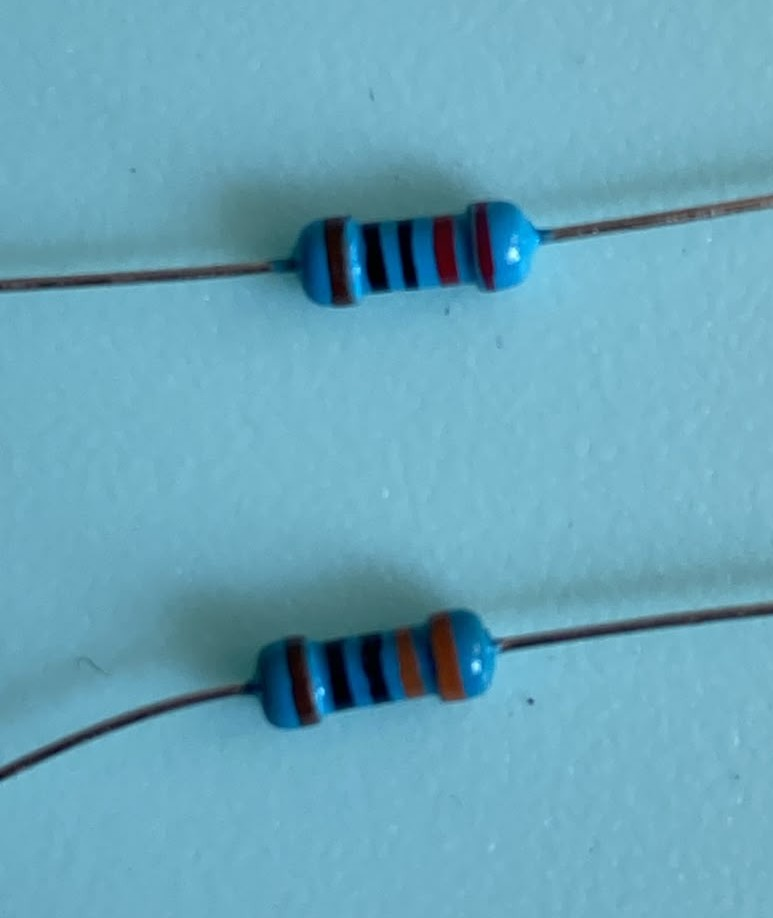
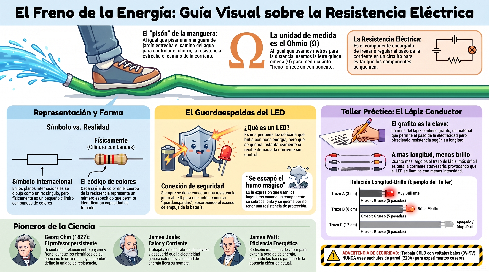

🟠 El freno de la energía
🚿 El pisón sobre la manguera
Imagina que estás regando el jardín con una manguera y sale demasiada agua. ¿Qué haces? Pisas la manguera un poco. Al estrechar el camino, pasa menos agua. El chorro se vuelve más suave y controlado.
En electrónica pasa exactamente lo mismo. Existe un componente que funciona como ese "pisón": se llama resistencia. Su trabajo es frenar el paso de la corriente para que nada se queme.

💡 Idea clave: la resistencia no apaga la corriente. Solo regula cuánta pasa. Es el control de volumen del circuito.
La resistencia se mide en ohmios, y su símbolo es la letra griega Ω (omega). Es una unidad de medida, igual que el metro sirve para medir distancias o el kilogramo para medir peso. Por ahora basta con saber que existe una unidad para medir el freno.
🔲 ¿Cómo se dibuja y cómo es por dentro?
En los planos eléctricos, la resistencia se dibuja de dos formas: con una línea en zigzag (estilo americano) o con un rectángulo pequeño (estilo europeo). En este curso usamos el rectángulo, porque es el estándar internacional.
Pero ojo: el rectángulo no es la resistencia física. Es solo un dibujo. La resistencia real es un pequeño cilindro con rayitas de colores en el cuerpo. Cada rayita representa un número, y juntas indican su valor.


🛡️ El guardaespaldas del LED
Antes de empezar: ¿qué es un LED? Un LED es una pequeña luz que se enciende cuando pasa corriente por él. Es muy usado en electrónica porque gasta poca energía, pero también es delicado: si recibe demasiada corriente, se quema en segundos.
Los LEDs son componentes muy sensibles. Si les llega toda la corriente de la pila sin control, se queman en segundos. Por eso siempre los conectamos con una resistencia al lado: es su guardaespaldas.
🔍 ¿Qué pasa si quitamos la resistencia? El LED recibe toda la corriente de golpe. Se sobrecalienta, se quema y deja de funcionar. Los ingenieros dicen que "se escapó el humo mágico".
🏠 ¿Dónde hay resistencias en tu casa?
Aunque no las veas directamente, casi todos los aparatos eléctricos contienen resistencias: el cargador de tu celular, el control del volumen de un radio, el regulador de brillo de una lámpara. Están escondidas dentro de los aparatos, controlando la corriente para que todo funcione sin quemarse.
✏️ Taller: El lápiz que controla la luz
Vamos a fabricar nuestra propia resistencia casera usando un truco muy sencillo: un trazo de lápiz sobre el papel conduce la electricidad. Y como no todos los trazos son iguales, podemos ver cómo cambia el brillo de un LED según el trazo que usemos.
El grafito es el material oscuro que forma la mina del lápiz. Es un tipo de carbón que conduce la electricidad, aunque con cierta dificultad.


🧰 Materiales
Antes de comenzar, reúne los ocho materiales. Si alguno te falta, puedes buscarlo en casa o pedirlo prestado en el colegio.
| # | Material | Detalle |
|---|---|---|
| 1 | LED rojo | Pata larga = positivo (+), pata corta = negativo (−) |
| 2 | Pila (3 V) | Con su portapilas, para conectar los cables |
| 3 | Lápiz de grafito | Preferiblemente blando (2B o más blando) |
| 4 | Resistencia | De 220 Ω o 330 Ω, para proteger el LED |
| 5 | Cinta adhesiva | De enmascarar, transparente o aislante (cinta negra) |
| 6 | 4 cables caimán | De colores distintos, para identificar cada conexión |
| 7 | Tarjeta (cartulina) | Tamaño carta o A4, para dibujar el trazo |
| 8 | Regla | Para medir los trazos con precisión |
🔌 ¿Cómo funciona el circuito?
El recorrido de la corriente es siempre el mismo:
- Sale de la pila (+) y pasa por la resistencia.
- Llega al LED y lo enciende.
- Continúa por el cable hasta el trazo de grafito.
- El trazo ofrece resistencia: cuanto más largo, más frena la corriente.
- Regresa por el cable al polo negativo (−) de la pila, cerrando el circuito.
💡 Recuerda: el trazo de grafito es tu resistencia variable. Cuanto más largo y delgado sea, más frenará la corriente y menos brillará el LED.
🛠️ Construcción paso a paso
-
Dibuja tres trazos con el lápiz:
- Trazo A: 3 cm de largo, grueso (repasa la línea 5 veces).
- Trazo B: 6 cm de largo, grueso.
- Trazo C: 12 cm de largo, grueso.
- Fija la resistencia con cinta sobre el papel, cerca de los trazos. Esto evita que se mueva y deja tus manos libres para trabajar.
- Conecta el circuito: pila → resistencia → LED → trazo de lápiz → pila. Pide ayuda a un adulto para sujetar los cables.
- Observa el brillo del LED en cada trazo. ¿En cuál brilla más? ¿En cuál brilla menos?
-
Dibuja esta tabla en tu bitácora y complétala marcando
con una X el brillo que observes en cada caso:
Trazo Largo Grosor 😃 Brillante 😐 Medio 😞 Apagado A 3 cm Grueso B 6 cm Grueso C 12 cm Grueso
❓ Pregunta guía
¿Por qué un trazo más largo apaga más el LED? ¿Qué está pasando dentro del grafito para que la corriente llegue más débil?
💡 ¿Sabías que…? Las computadoras que aprenden solas (las que usan inteligencia artificial) funcionan con millones de pequeñas conexiones que controlan cuánta información pasa de una parte a otra. Esas conexiones hacen algo muy parecido a lo que hace una resistencia: deciden cuánto pasa y cuánto se queda. Tú acabas de construir una con un lápiz.
💡 Sobre instrumentos de medida: en este taller no necesitas instrumentos especiales. Tu ojo, entrenado para comparar brillos, es tu mejor herramienta.
⚠️ Seguridad: trabaja siempre con 3V o 5V. Nunca uses voltajes de pared (110V o 220V). Y no olvides la resistencia de protección con el LED.
📜 Tres personajes que no se rindieron
La ley que vamos a estudiar no la descubrió una sola persona. Tres científicos de tres países distintos aportaron piezas clave, y cada uno enfrentó dificultades para que su trabajo fuera reconocido.
⚡ Georg Ohm — El profesor al que no le creyeron
Ohm era profesor de secundaria en Alemania. En sus ratos libres hacía experimentos con cables y pilas. Cuando publicó su descubrimiento, en 1827, los científicos no le creyeron. Se desanimó tanto que dejó de investigar durante varios años. Solo 14 años después, en 1841, recibió una medalla de la Royal Society de Londres. Y a los 60 años, finalmente, lo nombraron profesor de universidad. Su nombre hoy es una de las unidades más usadas en electrónica.
🔥 James Joule — El cervecero científico
Joule vivía en Inglaterra y trabajaba en la fábrica de cerveza de su familia. Nadie lo tomaba en serio como científico porque no venía de la universidad. Pero él estudiaba de noche y experimentaba en sus ratos libres. Descubrió que la corriente eléctrica produce calor. Durante años, sus colegas dudaron de sus resultados. Solo cuando otro científico importante lo apoyó públicamente, su trabajo fue reconocido. Hoy la unidad de energía lleva su nombre.
⚙️ James Watt — El que arregló una máquina vieja
Watt era un fabricante de instrumentos en Escocia. Un día le pidieron reparar una máquina de vapor que funcionaba muy mal. Watt se dio cuenta de que la máquina perdía mucha energía en cada vuelta, y con paciencia la rediseñó para que funcionara mejor. Su invento cambió la industria para siempre. Cuando hoy hablamos del "costo energético" de un aparato, usamos el nombre de Watt sin darnos cuenta.
Los tres tuvieron algo en común: no se rindieron cuando otros dudaron de ellos. Su trabajo es la base de toda la electrónica moderna.
Fuentes: biografías de la Royal Society, la Enciclopedia Británica y archivos históricos de ingeniería.🗺️ Repaso visual

El freno invisible
Dale play y en menos de 7 minutos descubrirás:
- 🚿 El pisón de la manguera: por qué frenar el agua es lo mismo que frenar la corriente.
- 🛡️ El guardaespaldas del LED: qué pasa si quitamos la resistencia.
- ✏️ El truco del lápiz: cómo fabricar tu propia resistencia con grafito.
- ⚡ El secreto de Ohm: el profesor al que no le creyeron y que hoy es una ley universal.
💡 Escúchalo en familia y comenta lo que más te sorprendió.